Aquí empieza el trabajo con datos: «calibrar, contar, trazar cada cromosoma y medir sus brazos». El bloque abre las fotomicrografías de tus metafases, las convierte a micras con su barra de escala, cuenta los cromosomas con marcas y mide cada brazo a lo largo de un trazo que sigue la curvatura del cromosoma. Si ya tienes las medidas, se capturan a mano o se pegan de una hoja de cálculo. Todo lo que se mide aquí lo usan el cariotipo y los bloques que siguen.
Las figuras de este capítulo usan el ejemplo del maíz (Bloque 1›Ejemplos incluidos, o el mosaico Ejemplo: maíz simulado del propio bloque): una accesión, «Maíz criollo · Texcoco», con cinco células de 20 cromosomas. La primera trae una metafase dibujada por la app con sus veinte trazos ya hechos; las otras cuatro, medidas capturadas a mano. Recuerda que son datos simulados: es «el maíz de ejemplo», no el maíz.
La primera tarjeta es la puerta de entrada. Tiene cuatro mosaicos, uno por cada manera de empezar, y dos botones para guardar el trabajo o empezar de nuevo.
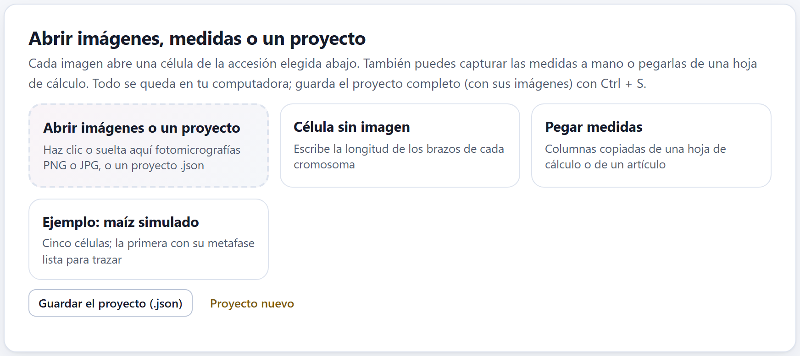
| Mosaico o botón | Qué hace |
|---|---|
| Abrir imágenes o un proyecto | Haz clic o suelta aquí fotomicrografías .png o .jpg (varias a la vez) o un proyecto .json. Cada imagen abre una célula nueva en la accesión elegida en la tarjeta siguiente, con el nombre del archivo sin su extensión; si todavía no hay accesiones, la app crea «Accesión 1». Al terminar, pasa sola a la herramienta Calibrar y lo dice: «Empieza por calibrar con la barra de escala». |
| Célula sin imagen | Crea una célula con cuatro renglones vacíos en la tabla de mediciones, para escribir a mano la longitud de los brazos (sección 2.6). |
| Pegar medidas | Abre (o cierra) un recuadro donde se pegan columnas copiadas de una hoja de cálculo o de un artículo (sección 2.6). |
| Ejemplo: maíz simulado | Abre el ejemplo del maíz. Reemplaza el proyecto, y si ya hay datos lo pregunta antes. |
| Guardar el proyecto (.json) | Guarda todo el proyecto —accesiones, células, imágenes, trazos y lo de los demás bloques— en un solo archivo. Es lo mismo que Ctrl + S. |
| Proyecto nuevo | Deja la app vacía. Si hay datos, pregunta antes: «¿Empezar un proyecto nuevo? Lo que no hayas guardado se perderá.» |
Mientras no haya células, en lugar de las tarjetas siguientes aparece un recuadro, Todavía no hay células, que recuerda las cuatro maneras de empezar.
Sólo se abren imágenes PNG o JPG y proyectos .json; con cualquier otro archivo la app avisa. Una imagen de más de 25 MB se abre, pero con un aviso: el proyecto la guarda dentro y se vuelve pesado. Recorta cada fotografía a la metafase antes de abrirla. Si entre los archivos que sueltas hay un .json, se abre sólo el proyecto.
Una accesión es una muestra: una población, una colecta, una variedad. Sus células son las metafases que mediste de ella, y el Bloque 3 las promedia para obtener su cariotipo. Un proyecto puede tener varias accesiones, cada una con sus células.
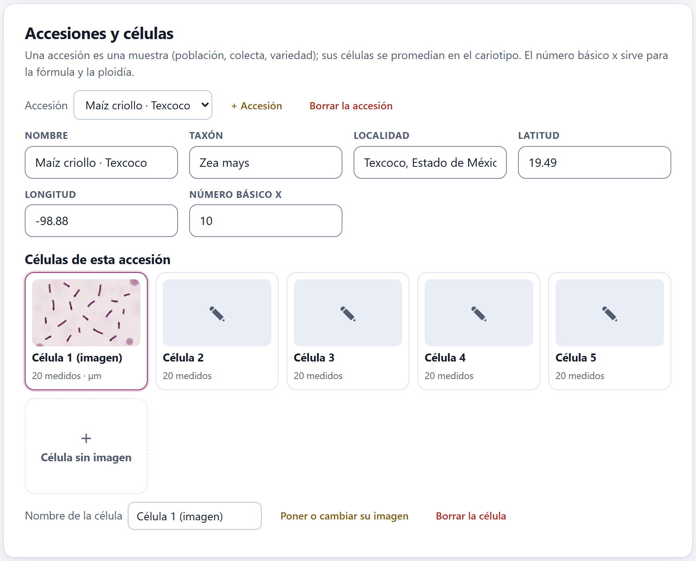
Cualquier cambio en las medidas, en la calibración o en las células marca el cariotipo de esa accesión para volver a calcularse: el Bloque 3 y el 4 lo rehacen la siguiente vez que los abres. No hay que avisarles nada.
Cuando la célula elegida tiene imagen aparece la tarjeta Medición sobre la imagen: arriba, la barra de herramientas; a la izquierda, el lienzo con la fotomicrografía; a la derecha, un panel con la ayuda de la herramienta activa y los datos de la célula.
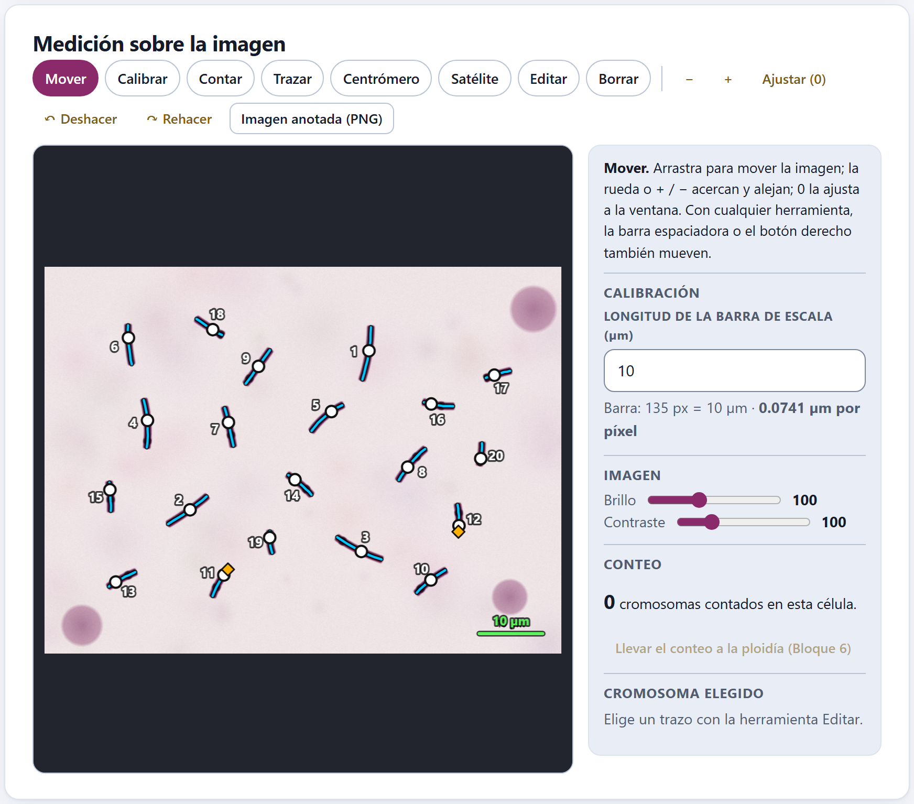
1 2 3 4 5 6 7 8 9 10V), Calibrar (C), Contar (N), Trazar (T), Centrómero (M), Satélite (S), Editar (E) y Borrar (B). La activa va rellena de color.Ctrl + Z y Ctrl + Y (sección 2.5).Con Mover se arrastra la imagen; la rueda del ratón acerca y aleja alrededor del puntero, + y − lo hacen alrededor del centro, 0 ajusta la imagen a la ventana y las flechas la desplazan. Con cualquier otra herramienta también se mueve arrastrando con el botón derecho o con la barra espaciadora oprimida, así que no hace falta cambiar de herramienta a cada rato. Acercar no cambia ninguna medida: los trazos se guardan en píxeles de la imagen original.
Una longitud en píxeles no dice nada por sí sola: depende del objetivo, de la cámara y de cómo se guardó la imagen. Por eso cada célula se calibra con la barra de micras de su propia fotografía. Con Calibrar, arrastra una línea de un extremo al otro de la barra y escribe su longitud en Longitud de la barra de escala (µm) (10 por omisión). Desde ese momento todas las medidas de la célula están en micras, y el panel da la escala: en la célula 1 del maíz de ejemplo, «Barra: 135 px = 10 µm · 0.0741 µm por píxel».
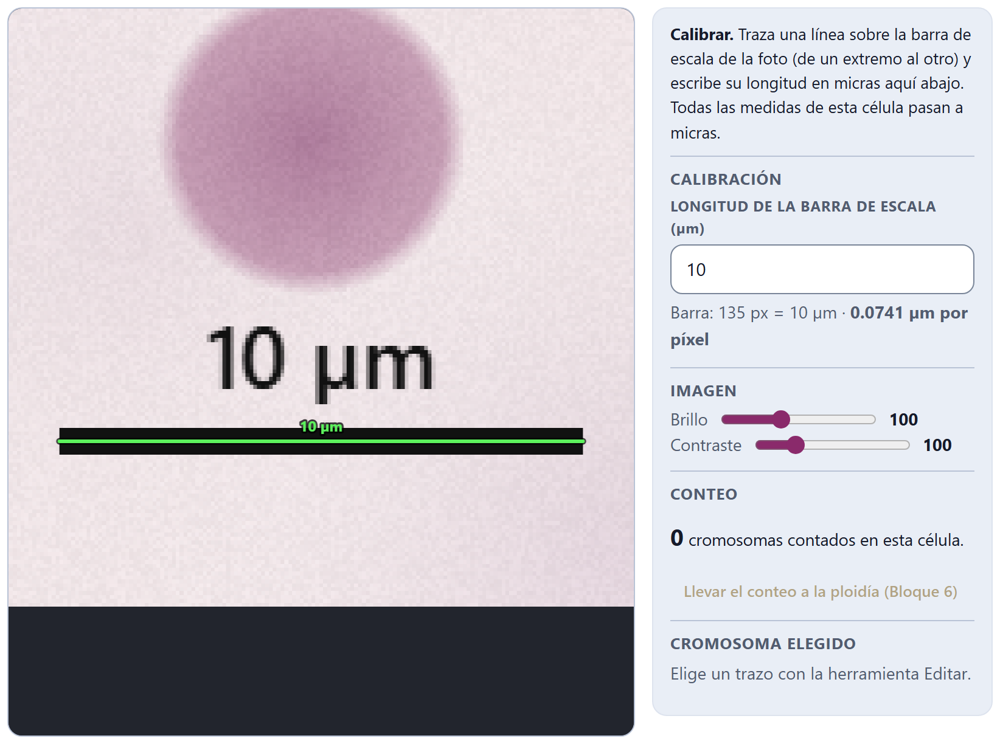
La barra mide 10 µm y la línea trazada sobre ella, 135 píxeles: 10 / 135 = 0.0741 µm por píxel. Un brazo que mide 50 píxeles a lo largo de su trazo mide entonces 50 × 0.0741 = 3.70 µm. Si cambias la longitud de la barra después de calibrar, todas las medidas de la célula se recalculan con la nueva escala, y el cambio se puede deshacer.
Mientras una célula con imagen no se calibra, sus medidas salen en píxeles: el panel dice «Sin calibrar: las medidas salen en píxeles. Usa la herramienta Calibrar.», su mosaico dice sin calibrar y el resumen lo advierte (sección 2.7). Una línea de menos de seis píxeles en pantalla no cuenta como calibración, para que un clic accidental no la cambie.
Calibra cada célula aunque todas vengan del mismo microscopio: si una fotografía se recortó o se guardó a otro tamaño, su escala cambia. Las células sin calibrar no deben mezclarse con las calibradas: el Bloque 3 promediaría píxeles con micras.
Los controles Brillo (de 40 a 200) y Contraste (de 40 a 300), en 100 por omisión, ayudan a distinguir los extremos y el centrómero en una preparación pálida u oscura. Se guardan con cada célula, se aplican también a la imagen anotada y no tocan ninguna medida ni la imagen original.
Con Contar, un clic sobre cada cromosoma deja una marca amarilla con su número de orden, y el panel lleva la cuenta: «20 cromosomas contados en esta célula». Para quitar una marca se usa Borrar. Contar no exige trazar: es la manera rápida de registrar el 2n de muchas células, aunque sólo vayas a medir algunas.
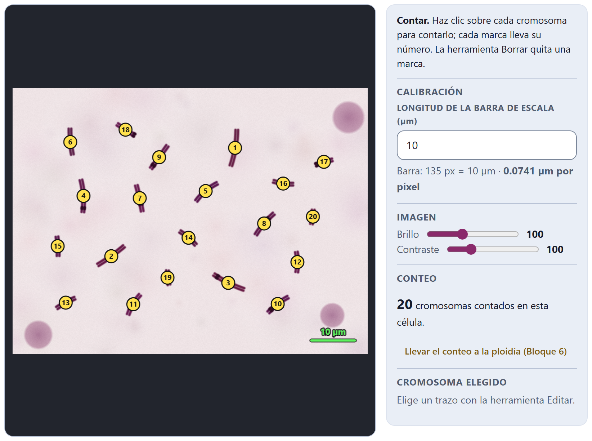
Llevar el conteo a la ploidía (Bloque 6) escribe el conteo en la tabla de conteos del Bloque 6, con la accesión y el nombre de la célula; si esa célula ya tenía un renglón, lo reemplaza. La app lo confirma, por ejemplo: «Conteo enviado al Bloque 6: 2n = 20 en «Célula 1 (imagen)».» Allí se calcula la moda de cada accesión y su nivel de ploidía (capítulo 6).
Un cromosoma se mide en tres pasos: se traza su eje de un extremo al otro, se marca su centrómero y, si lo tiene, su constricción secundaria. Las tres cosas se hacen sobre la imagen, y la app mide a lo largo del trazo.
Con Trazar, haz clic a lo largo del cromosoma, de un telómero al otro, siguiendo su curvatura; cada clic agrega un punto. También puedes mantener el botón oprimido y trazar a mano alzada: la app toma un punto cada seis píxeles de pantalla. Para terminar, doble clic o Intro; Retroceso quita el último punto y Esc cancela el trazo. Mientras trazas, la línea va en rosa y sigue al puntero.
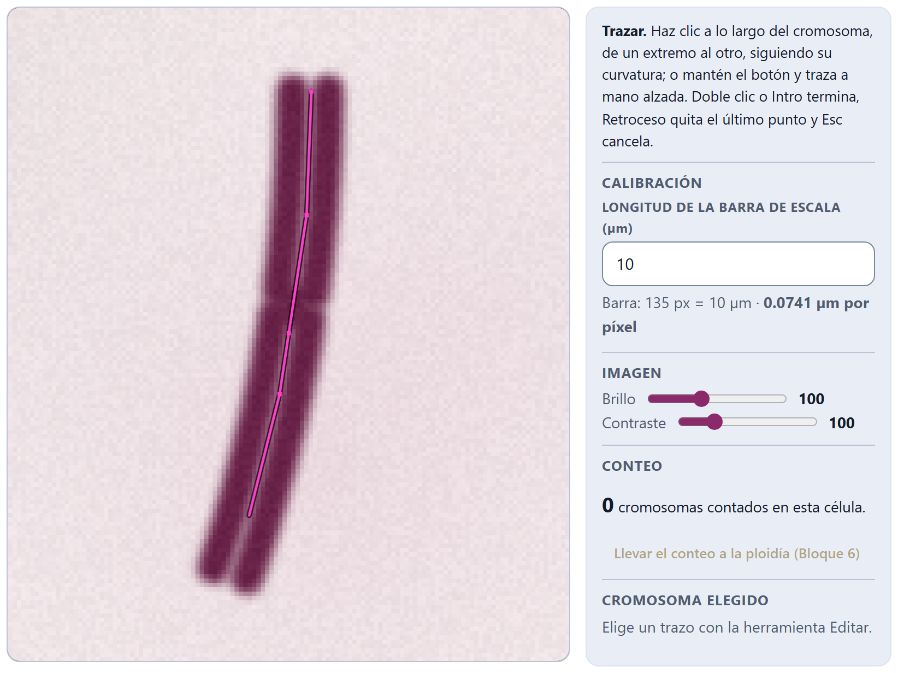
Al terminar, el cromosoma recibe el primer número libre de la célula (1, 2, 3…) y la app pasa sola a Centrómero, porque un trazo sin centrómero todavía no da brazos: su número se ve en naranja, su mosaico lo cuenta como incompleto y la tabla de mediciones dice sin centrómero. Un trazo de menos de tres píxeles se descarta.
El trazo es una polilínea: una cadena de segmentos rectos. Su longitud es la suma de las longitudes de sus segmentos, y con suficientes puntos se acerca a la del eje curvo del cromosoma. Una recta entre los dos extremos de un cromosoma doblado lo acortaría; la polilínea mide lo que mediría el cromosoma estirado. Las posiciones del centrómero y del satélite se guardan como distancias a lo largo de la polilínea, desde su primer punto.
Con Centrómero, haz clic sobre el trazo donde está la constricción primaria. No hace falta atinar a la línea: la app lleva el clic al punto más cercano del trazo (del cromosoma elegido, o del que esté más cerca del clic) y mide los dos brazos a lo largo de la curvatura. El brazo más corto es p y el más largo, q. Un nuevo clic cambia la posición del centrómero. El centrómero se dibuja como un círculo blanco.
Algunos cromosomas tienen una constricción secundaria, casi siempre en el brazo corto, donde está la región organizadora del nucléolo; el trozo de más allá es el satélite (Battaglia, 1955). Con Satélite, haz clic sobre el trazo en la constricción secundaria: lo que queda hasta el extremo de ese brazo es el satélite, y se dibuja con un rombo naranja. Primero hay que marcar el centrómero; si no, la app lo recuerda: «Primero marca el centrómero de este cromosoma.»
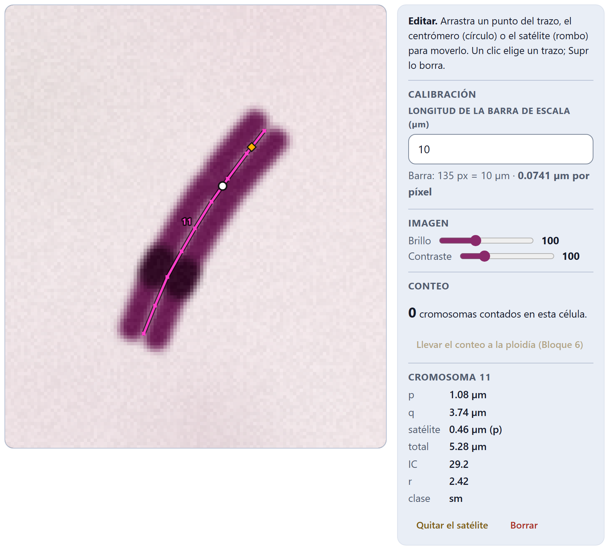
El panel dice p = 1.08 µm, q = 3.74 µm, satélite = 0.46 µm (en p) y total = 5.28 µm. El brazo p se da sin el satélite, que va aparte. Para la clase, en cambio, la app suma el satélite a su brazo, como lo hace por omisión el Bloque 3: el brazo corto completo mide 1.08 + 0.46 = 1.54 µm, así que IC = 100 × 1.54 / 5.28 = 29.2 y r = 3.74 / 1.54 = 2.42, un submetacéntrico (sm). Es uno de los dos homólogos que en el Bloque 3 forman el par 6, el del satélite.
Al marcar un centrómero o un satélite, la app anuncia las medidas para los lectores de pantalla («Cromosoma 11: p 1.08, q 3.74, satélite 0.46»), de modo que también se puede trabajar con ellos.
Con Editar, un clic sobre un trazo lo elige: se dibuja en rosa, con sus puntos a la vista, y su renglón se resalta en la tabla. Ya elegido, puedes arrastrar cualquiera de sus puntos para corregir el trazo, y arrastrar el centrómero o el satélite a lo largo de la línea. Supr borra el trazo elegido. Un clic en un lugar vacío deja de elegirlo y, si arrastras, mueve la imagen.
El panel Cromosoma elegido cambia entonces a Cromosoma con su número (figura 2.7) y da p, q, el satélite y su brazo, el total, IC, r y la clase con el esquema elegido en el Bloque 3. Si al trazo le falta el centrómero, da sólo su longitud y lo dice. Dos botones actúan sobre él: Quitar el satélite (sólo si lo tiene) y Borrar.
Con Borrar, un clic sobre una marca de conteo la quita; si no hay marca cerca, quita el trazo que está bajo el clic. Las marcas se renumeran solas. Lo borrado se recupera con ↶ Deshacer.
↶ Deshacer (Ctrl + Z) y ↷ Rehacer (Ctrl + Y o Ctrl + Mayús + Z) recorren los últimos cambios de la célula: trazos, centrómeros, satélites, puntos movidos, marcas de conteo, calibración y borrados, hasta 120 pasos atrás. Con un trazo a medio hacer, ↶ Deshacer lo descarta. El historial es de la célula abierta: al elegir otra célula empieza uno nuevo.
Imagen anotada (PNG) descarga la fotomicrografía a su resolución original, con el brillo y el contraste que elegiste y con todo lo que dibujaste encima: la línea de calibración, las marcas de conteo, los trazos con su número, los centrómeros y los satélites. El nombre del archivo se forma con la accesión y la célula y termina en _anotada.png. Es la figura que conviene guardar con los datos crudos, porque muestra exactamente qué se midió.
La tarjeta Mediciones de la célula da un renglón por cromosoma de la célula elegida, con imagen o sin ella.
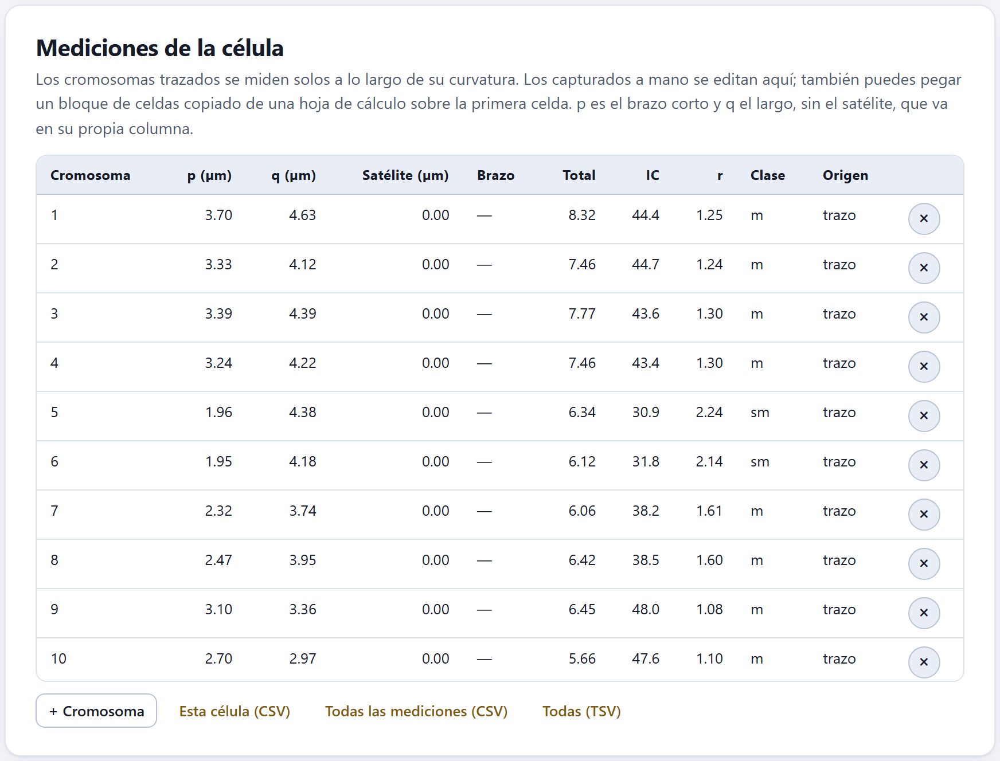
| Columna | Qué contiene |
|---|---|
| Cromosoma | El número o nombre del cromosoma en la célula. |
| p · q | El brazo corto y el largo, sin el satélite, en µm (o en px si la célula con imagen no está calibrada). |
| Satélite · Brazo | La longitud del satélite y el brazo que lo lleva (p o q). |
| Total | p + q + satélite. |
| IC · r | El índice centromérico y la razón de brazos, con el satélite sumado a su brazo como en el ejemplo del cromosoma 11. |
| Clase | m, sm, st o t (y M o T en los casos exactos), con el esquema del Bloque 3; sin centrómero si el trazo está incompleto. |
| Origen | trazo si sale de la imagen; a mano si se escribió o se pegó. El botón × borra el renglón. |
En una célula sin imagen, o para los cromosomas que no se trazaron, cada valor es un campo editable: el nombre, p, q, el satélite y, en una lista, su brazo. + Cromosoma agrega un renglón vacío. Si copias de una hoja de cálculo un bloque de celdas (p, q y satélite, varios renglones) y lo pegas sobre una celda de p, la app llena los renglones hacia abajo y crea los que falten.
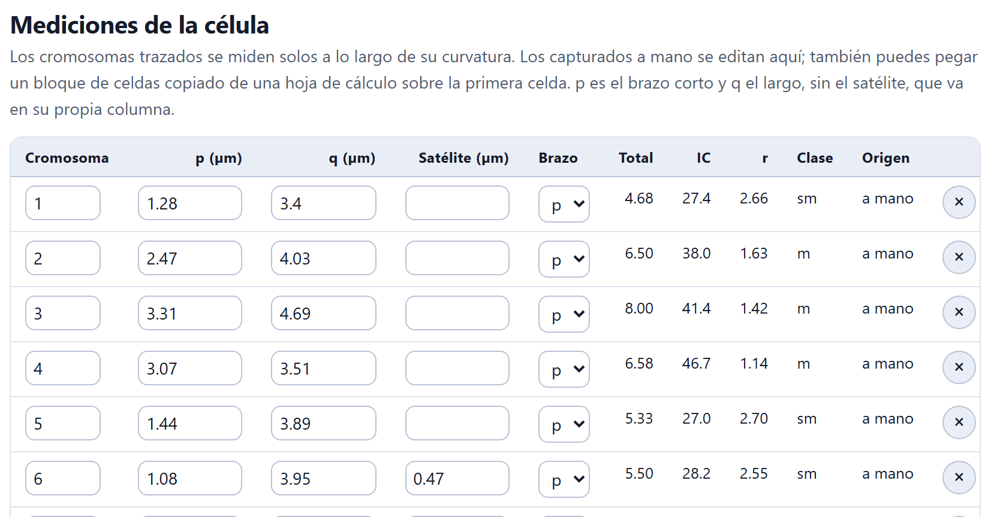
Al pie de la tabla, Esta célula (CSV) descarga las mediciones de la célula elegida; Todas las mediciones (CSV) y Todas (TSV), las de todo el proyecto, en mediciones.csv o mediciones.tsv. Las columnas son accesión, taxón, célula, cromosoma, p, q, satélite, brazo del satélite, unidad (µm o px) y origen; los trazos incompletos no se exportan.
Si ya tienes las medidas en una hoja de cálculo o en la tabla de un artículo, Pegar medidas las lee de una vez. Una fila por cromosoma, en micras, con tabulador, punto y coma o coma como separador:
Las filas sin un número válido para p (cero o más) y para q (mayor que cero) se saltan, y el mensaje dice cuáles. Las accesiones se buscan por su nombre; las que no existen se crean.
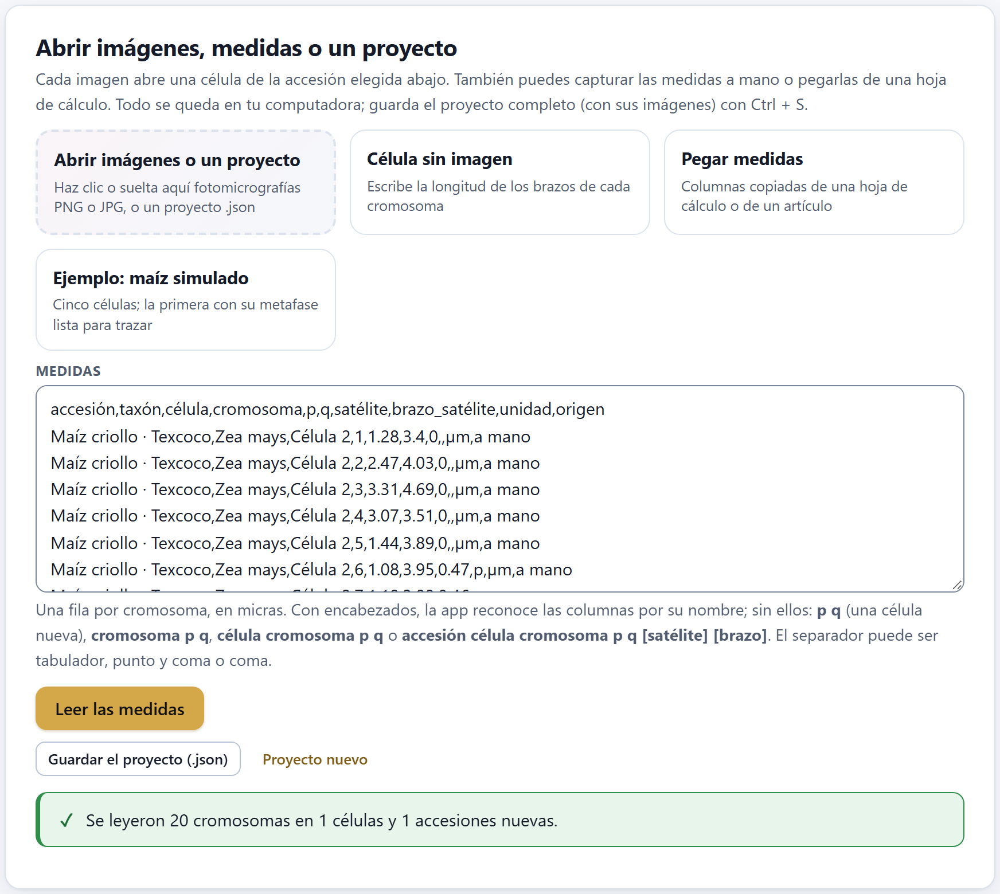
Si pegas en un proyecto vacío filas que traen el nombre de su accesión, la app deja además una «Accesión 1» vacía, que se quita con Borrar la accesión. Y de las columnas del CSV que ella misma exporta lee la accesión, la célula, el cromosoma, p, q y el satélite, pero no el taxón ni la unidad: escribe el taxón en su campo de Accesiones y células, y no pegues medidas en píxeles, porque se tomarán como micras.
La última tarjeta resume todo lo medido en el proyecto, en cuatro cifras y una tabla por accesión, y avisa de lo que conviene revisar antes de pasar al cariotipo.
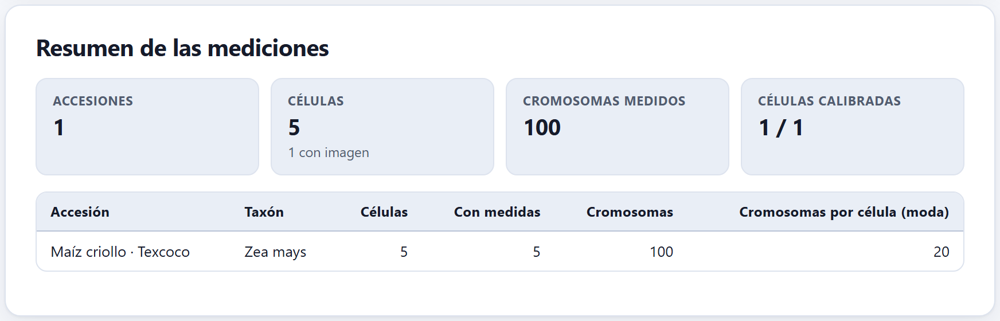
Las cuatro cifras son Accesiones, Células (con cuántas tienen imagen), Cromosomas medidos (los completos: un trazo sin centrómero no cuenta) y Células calibradas entre las que tienen imagen, que se marca como advertencia si falta alguna. La tabla da, por accesión, su taxón, sus células, cuántas tienen medidas, cuántos cromosomas y la moda de cromosomas medidos por célula. Debajo pueden aparecer dos avisos:
| Si Células calibradas no es «n / n» | entonces calibra las que faltan con su barra de escala. |
| Si una célula tiene trazos incompletos | entonces márcales el centrómero o bórralos; no entran al cariotipo. |
| Si el resumen avisa que el número varía entre células | entonces busca el cromosoma que falta o el que se trazó dos veces; si la célula es aneuploide de verdad, anótalo y considera dejarla fuera del cariotipo. |
| Si sólo contaste, sin medir | entonces lleva los conteos al Bloque 6; el cariotipo necesita medidas. |
| Si todo está en orden | entonces guarda el proyecto (Ctrl + S) y pasa al Bloque 3. |
Conviene medir varias metafases bien extendidas por accesión; la app acepta cualquier número, y el Bloque 3 muestra la desviación entre células.
Las teclas de las herramientas no hacen nada. El lienzo debe tener el foco: haz clic en la imagen o en el botón de la herramienta. «Haz clic sobre el trazo de un cromosoma.» El clic con Centrómero o Satélite cayó lejos de todo trazo: acerca la vista y vuelve a intentarlo. Las medidas salen en px. La célula no está calibrada. Un cromosoma no aparece en el resumen. Le falta el centrómero. p y q salieron al revés de lo que esperabas. La app llama p al brazo más corto (con su satélite), sin importar por qué extremo empezaste a trazar. Calibré con la longitud equivocada. Corrige el número en Longitud de la barra de escala (µm): todo se recalcula. El proyecto pesa mucho. Las imágenes van dentro del .json: recórtalas a la metafase antes de abrirlas.